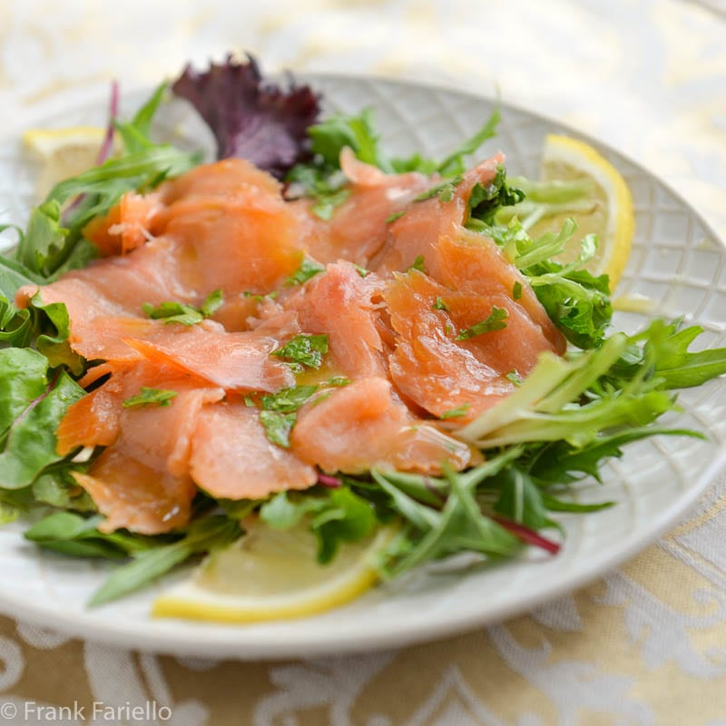
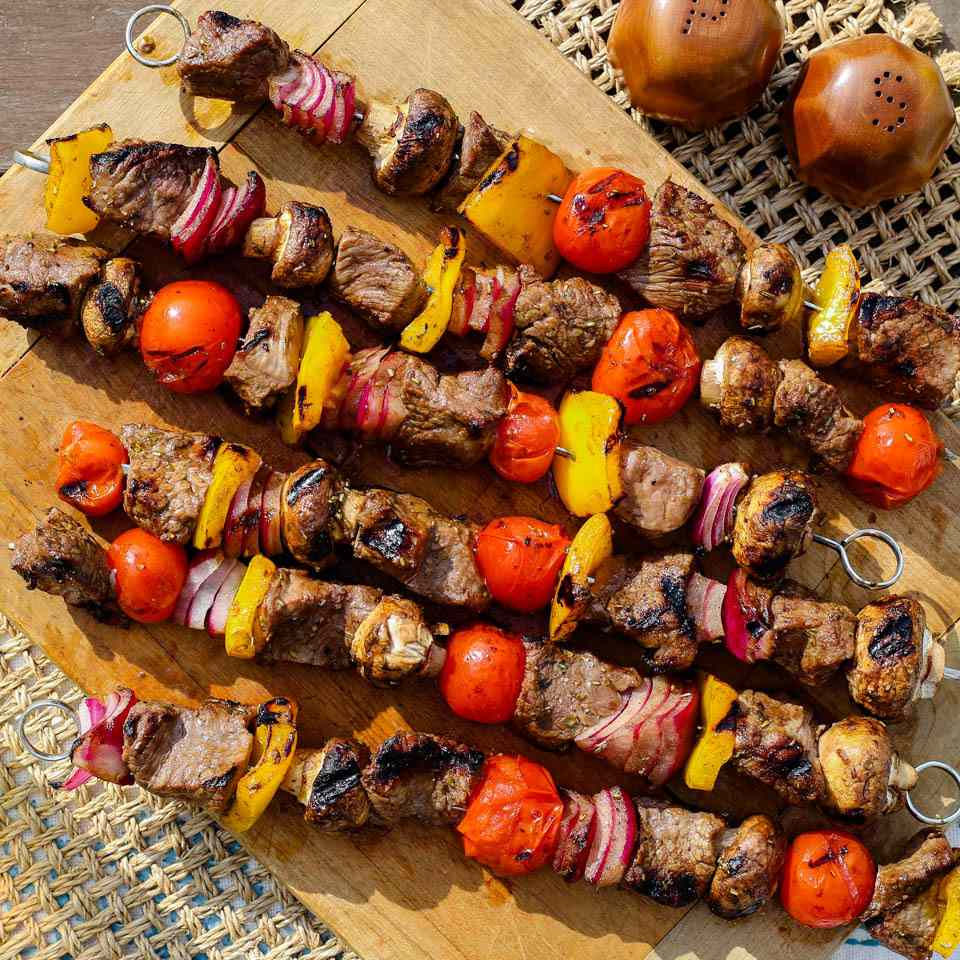
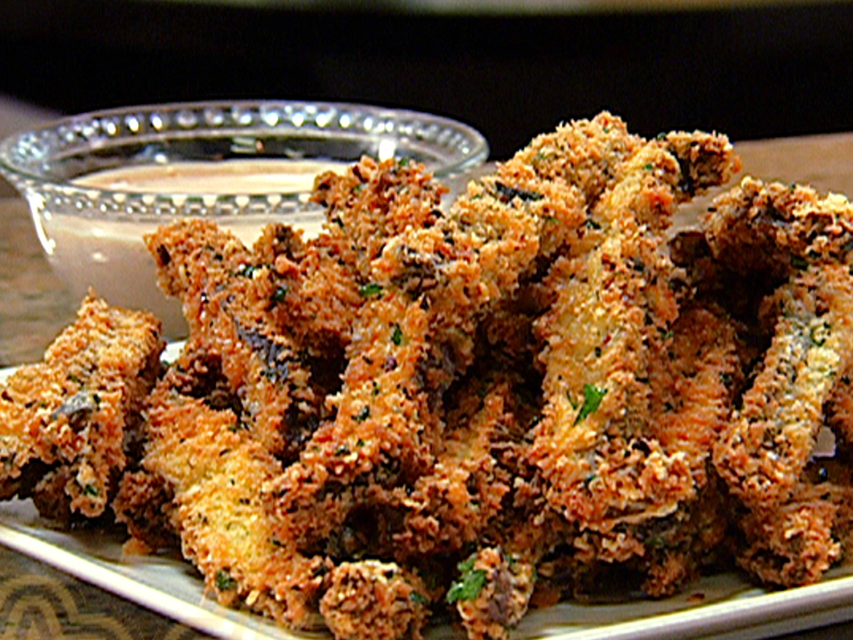
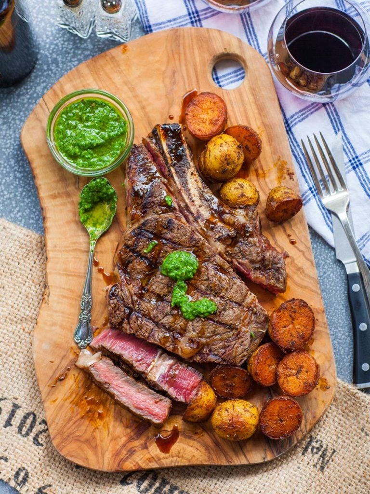

Menu
Appetizers
Smoked Salmon Carpaccio
Thinly sliced smoked salmon with capers, red onion, and fresh dill, drizzled with lemon-herb vinaigrette.
Beef & Vegetable Skewers
Marinated prime beef tips and seasonal vegetables grilled to perfection.
Portobello Mushroom Fries
Crispy breaded portobello mushroom strips served with a zesty garlic aioli.
House Salad
Mixed greens, cherry tomatoes, cucumber, red onion, and a choice of balsamic vinaigrette or lemon-tahini dressing.

Steaks
(All steaks are aged prime cuts, grilled to your preference)
Ribeye Steak (16 oz)
Richly marbled and flavorful.
New York Strip (14 oz)
Firm, tender, and intensely beefy.

Sauces
House Steak Sauce
Mushroom Demi-Glace
Chimichurri
Garlic Confit Oil
Sides
Garlic Mashed Potatoes
Crispy Onion Rings
Sautéed Asparagus
Roasted Rosemary Potatoes
Creamed Spinach (made with pareve cream alternative)
Grilled Seasonal Vegetables